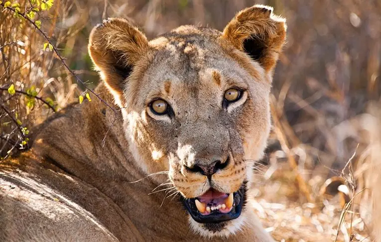
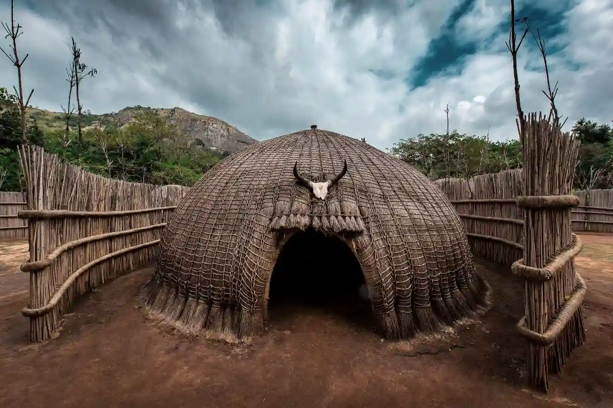
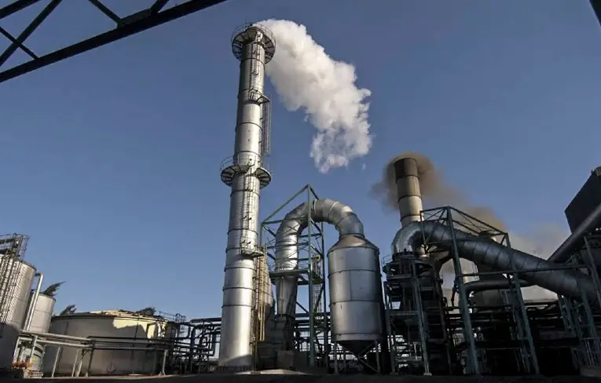
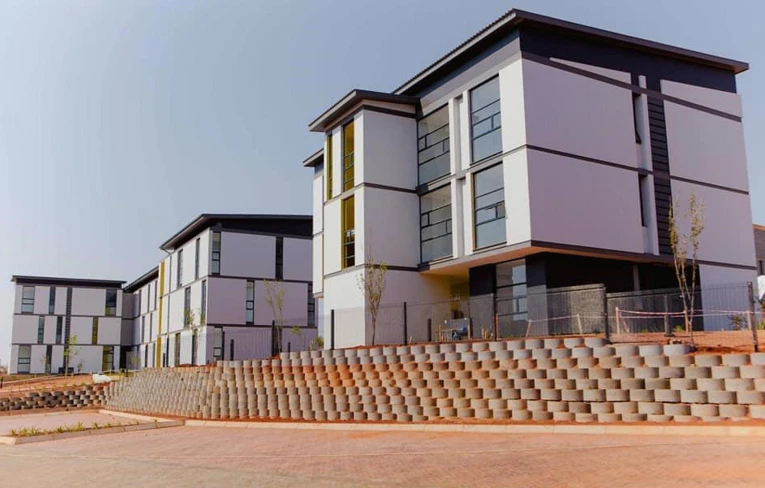
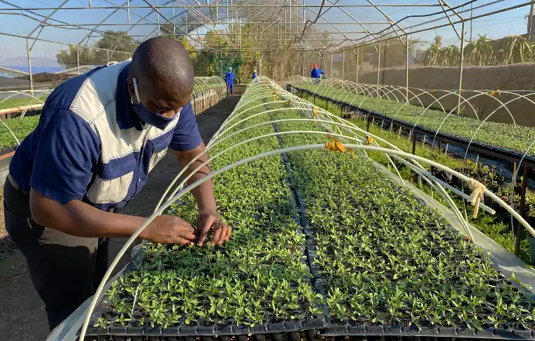
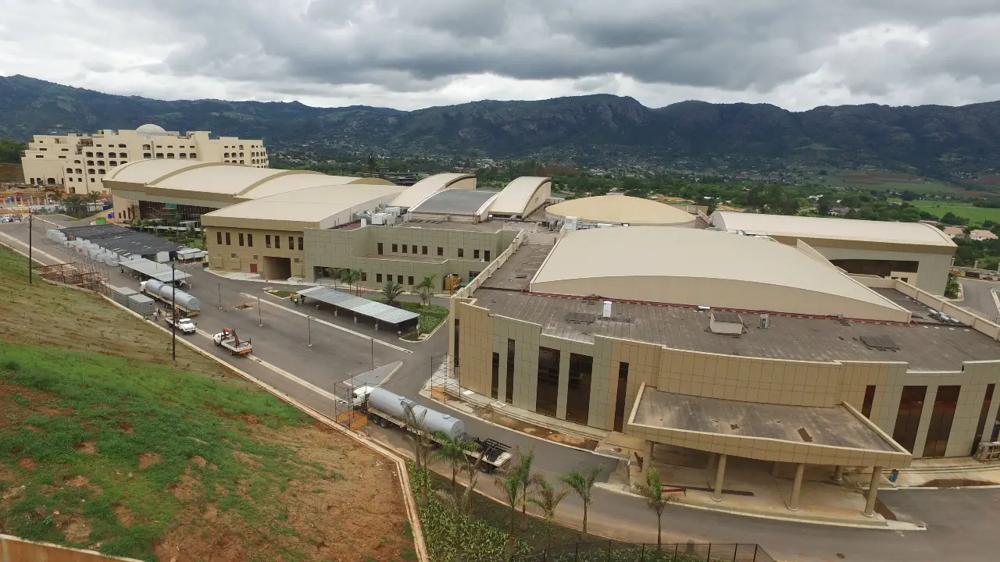

Discover Matsapha Municipality Chamber of Commerce
Attractions
Matsapha Industrial Site: One of Eswatini's largest industrial areas, showcasing the
country's manufacturing prowess.
Mavuso Trade Centre: A modern exhibition and conference facility hosting various events and
trade shows.
Matsapha Nature Reserve: A small protected area offering hiking trails and wildlife viewing
opportunities.
Somhlolo National Stadium: Located nearby in Lobamba, it's the country's main sports venue.
Accomodation
The George Hotel: A business-class hotel offering comfortable rooms and conference
facilities.
Lugogo Sun: A nearby resort with a casino, located in the Ezulwini Valley.
Various guesthouses and B&Bs catering to business travelers and tourists.
Demographics
Population: Approximately 35,000 (as of 2022 estimate)
Age Structure: Predominantly working-age population due to industrial nature of the town
Matsapha Nature Reserve: A small protected area offering hiking trails and wildlife viewing
opportunities.
Language: Primarily siSwati and English
Statistical Data
Area: About 25 square kilometers
Elevation: Approximately 660 meters above sea level
Economic Focus: Industrial and manufacturing hub
Major Industries: Textiles, beverages, electronics assembly
Employment: Accounts for about 30% of Eswatini's formal employment
Education: Home to the University of Eswatini's Institute of Distance Education

A lion in nearby Hlane wildlife sanctuary.

A traditional heart you can spend the night in at Mantenga cultural village.

A sugar production plant.

A housing development in Matsapha that is currently under construction.

A farmer tending to his crop in Matsapha.

Multi-billion hotel and international conferencing centre nears completion.